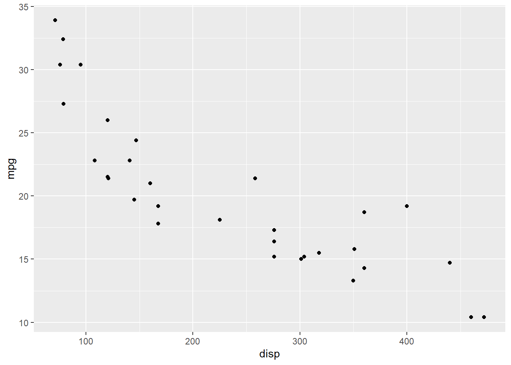
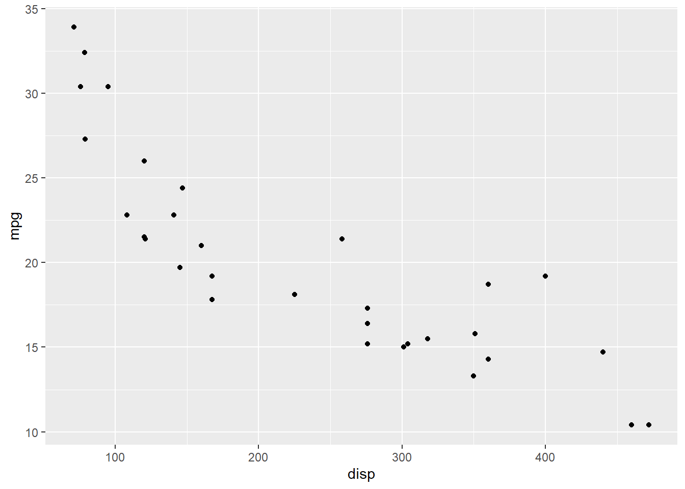

```{r}
#| label: fig-mtcars-plot
#| fig-cap: "Fuel efficiency of cars vs. their displacement."
ggplot(mtcars, aes(x = disp, y = mpg)) +
geom_point()
```
This lab is due XXX.
In this lab, you will…
project. You can do this by navigating to it from the top right corner of your RStudio window.You do not need to submit a revised version of your proposal, but if there are issues in your proposal that prevent your project from rendering, you should fix those.
report.qmd.Your next project related deadline is Fri, Nov 11 at 11:59pm. Your project draft, written in report.qmd, must be pushed to GitHub by that time. You will lose push access to your repo at that time until your draft has been reviewed. Once again, you will receive feedback as issues on your GitHub repository.
In report.qmd set echo: false in the YAML of your document. Read through your draft completely and make sure everything makes sense without the code visible, and make any edits as needed. Then, set echo: true again before submitting. (For your draft we want to see your code so we can provide feedback on it. For your final report we will ask you to hide it again.)
Update your index.qmd:
Update the title field with your team name.
Add your abstract.
Update your About page (about.qmd) with information on your team.
Much of what is listed in this section is optional, but we recommend reviewing them as a team and deciding on which ones you want to use/include in your project.
You can see your deployed project website at the URL listed in your project repo.
theme field in the _quarto.yml file.To add a footnote, make sure you’re in the Visual editor mode in RStudio and click on Insert > Footnote.1 One you add your footnote, click outside of the footnote area, anywhere else in your document, to go back to editing your document.
You can add cross references to your figures and tables so that you can refer to them like “Figure 1 shows that …” or “As seen in Table 1, …” instead of “the figure below” or “the table below”. To do this, you need to label the code chunks for those figures and tables in a special way (with fig- and tbl- suffixes, respectively) and add captions to them.
For example, Figure 1 shows a positive and moderately strong relationship between fuel efficiency of cars (measured as miles/gallon) and their displacement.
```{r}
#| label: fig-mtcars-plot
#| fig-cap: "Fuel efficiency of cars vs. their displacement."
ggplot(mtcars, aes(x = disp, y = mpg)) +
geom_point()
```
What you’re not seeing in the text above is that we didn’t type Figure 1 in the text, but instead referenced this figure with @fig-mtcars-plot:
For example, @fig-mtcars-plot shows a positive and moderately strong relationship between fuel efficiency of cars (measured as miles/gallon) and their displacement.
And Table 1 shows the output of the linear regression for predicting fuel efficiency from displacement.
Note that we piped the result of the tidy() function (which outputs a tibble) into the kable() function from the knitr package to turn it into a table. Quarto needs this last step to know that this code chunk produces a table that can be formatted and cross referenced as such.
```{r}
#| label: tbl-mpg-disp
#| tbl-cap: "Linear regression model for predicting fuel efficiency from displacement."
linear_reg() |>
fit(mpg ~ disp, data = mtcars) |>
tidy() |>
knitr::kable()
```| term | estimate | std.error | statistic | p.value |
|---|---|---|---|---|
| (Intercept) | 29.5998548 | 1.2297195 | 24.070411 | 0 |
| disp | -0.0412151 | 0.0047118 | -8.747151 | 0 |
Once again, what you’re not seeing in the text above is that we didn’t type Table 1 in the text, but instead referenced this table with @tbl-mpg-disp.
And @tbl-mpg-disp shows the output of the linear regression for predicting fuel efficiency from displacement.
You can use Quarto’s built-in citation and bibliography features for your citations. For example …
Here is a footnote!↩︎